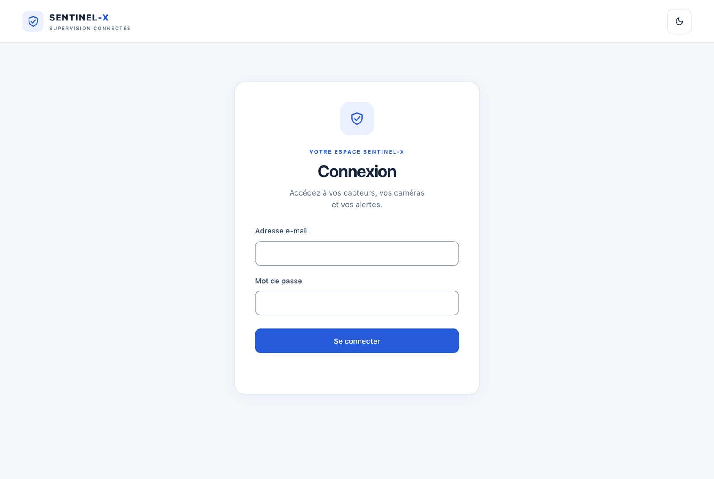
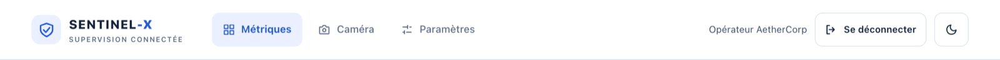
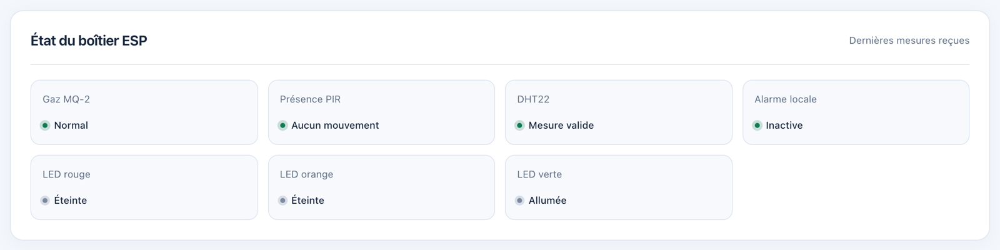
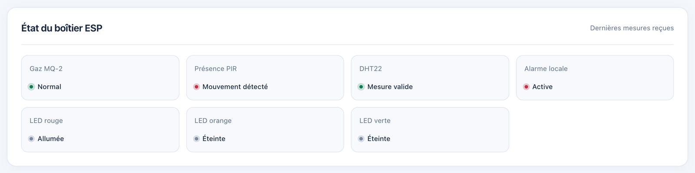
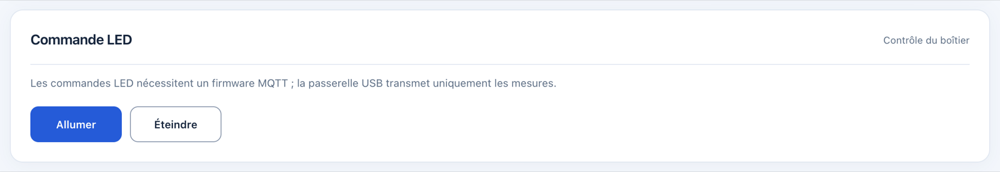
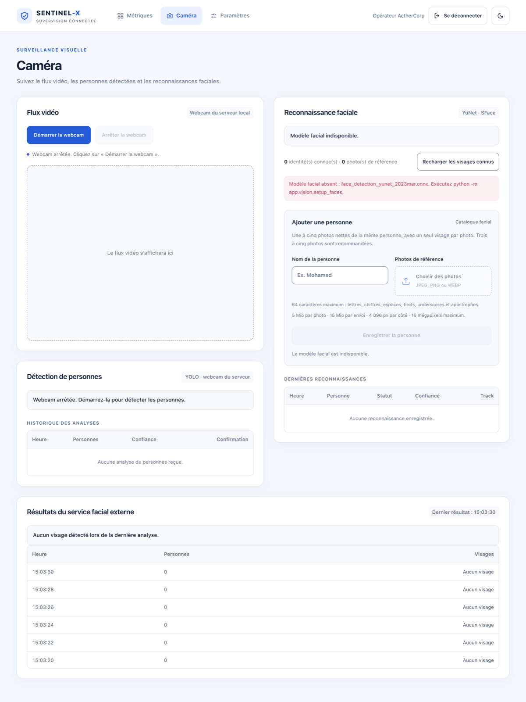
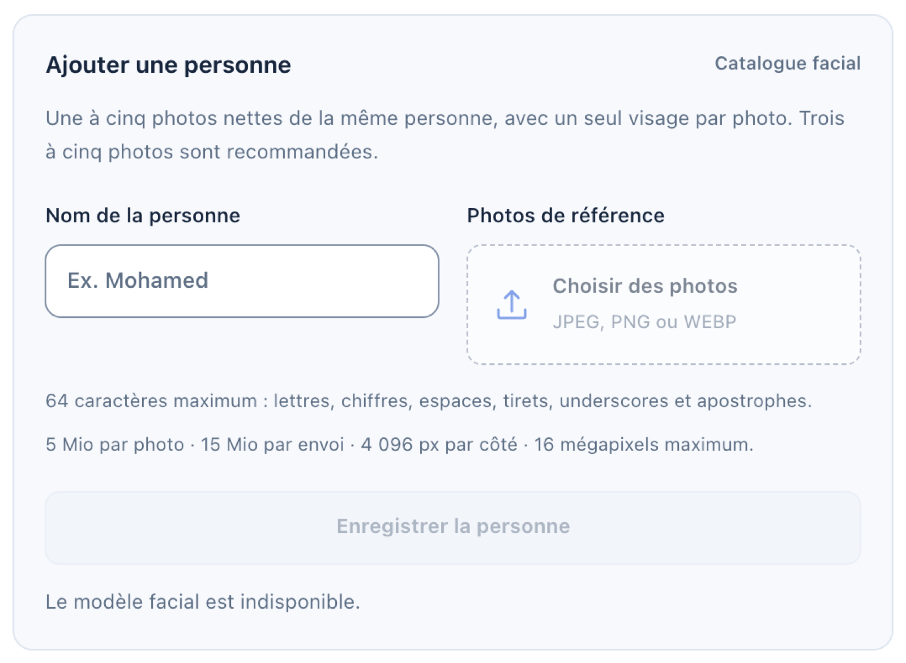
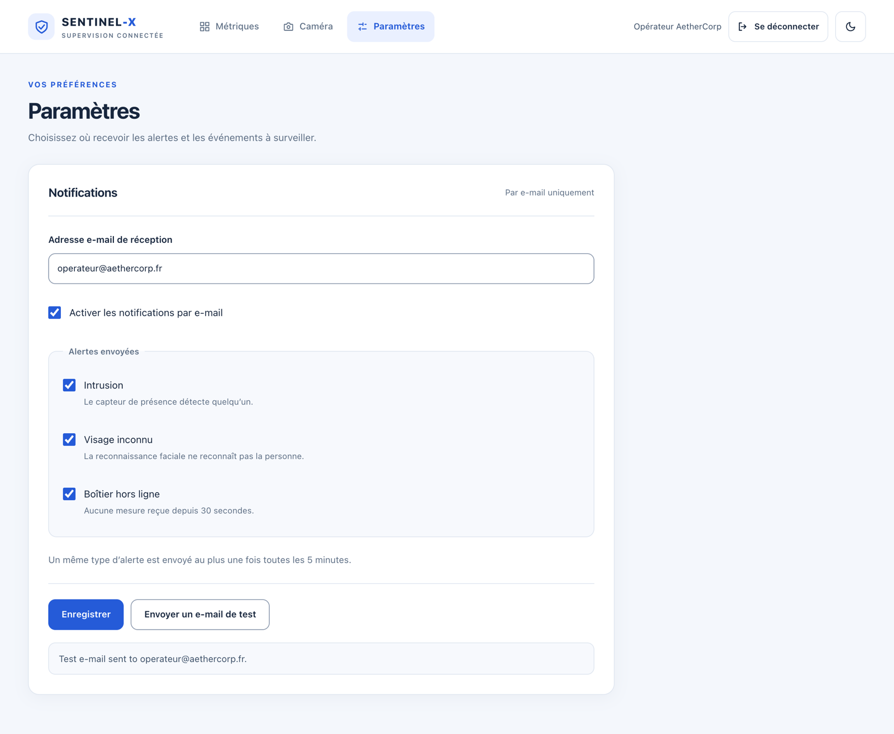
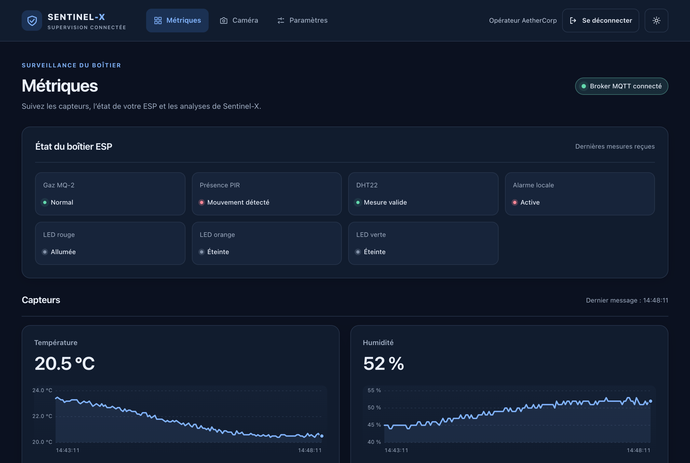
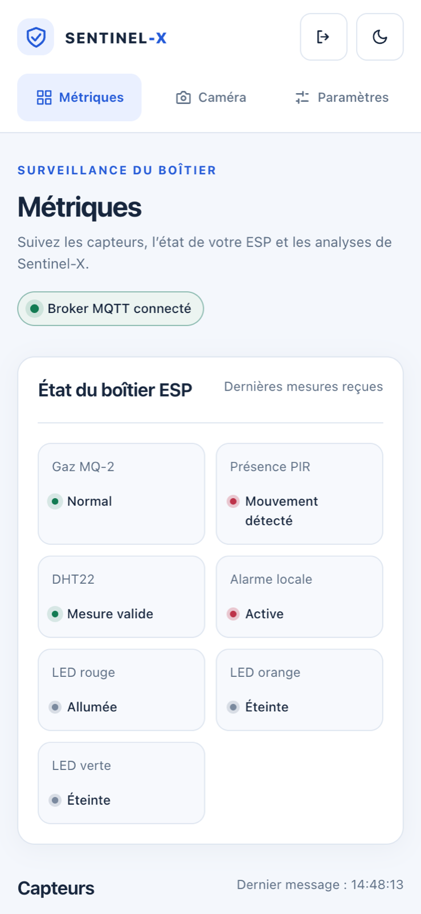

Se connecter, surveiller le boîtier et ses capteurs, lire les analyses de l'IA, utiliser la caméra et la reconnaissance faciale, recevoir les alertes par e-mail.
Ouvrez l'adresse du dashboard communiquée par votre administrateur, par exemple http://127.0.0.1:5173 sur le PC serveur ou http://192.168.10.1:8080 depuis le réseau de la table. Saisissez votre adresse e-mail et votre mot de passe, puis cliquez sur Se connecter.


| Élément | Action |
|---|---|
| Métriques | Mesures des capteurs, état du boîtier, analyses de l'IA |
| Caméra | Webcam du serveur, détection de personnes, reconnaissance faciale |
| Paramètres | Réglage des alertes par e-mail |
| Nom de l'opérateur | Rappelle le compte connecté |
| Se déconnecter | Ferme la session (à faire en quittant le poste) |
| Icône lune / soleil | Bascule entre thème clair et thème sombre |
Toutes les données se mettent à jour automatiquement : il est inutile de recharger la page.
En haut à droite, la pastille indique si le serveur reçoit les messages du boîtier :
Ce panneau reproduit ce que le boîtier signale lui-même : état des capteurs, alarme locale et LEDs.


| Carte | États possibles |
|---|---|
| Gaz MQ-2 | Préchauffage, Normal, Danger |
| Présence PIR | Calibration, Aucun mouvement, Mouvement détecté |
| DHT22 | Mesure valide, Erreur (capteur de température à vérifier) |
| Alarme locale | Inactive, Active |
| LED rouge / orange / verte | Allumée, Éteinte |
Si le boîtier n'envoie plus rien pendant 30 secondes, toutes les cartes passent à « Inconnu » : vérifiez le câble USB et la passerelle. Le boîtier continue néanmoins de déclencher ses alarmes sur place.
Chaque capteur (température, humidité, gaz, présence) dispose d'une carte avec :
« Aucune donnée » signifie que le capteur n'a pas encore fourni de mesure valide : préchauffage, capteur en erreur ou boîtier débranché. Une coupure apparaît comme un trou dans la courbe. La valeur du gaz est une mesure relative (0 à 1023), utile pour repérer une hausse.

Les boutons Allumer et Éteindre envoient un ordre au boîtier. Avec le boîtier USB actuel, ces ordres sont publiés mais non appliqués : le boîtier gère ses LEDs lui-même, selon les alarmes.
Le panneau AI ENGINE présente l'analyse automatique de chaque mesure : comportement inhabituel des capteurs, présence confirmée par la caméra et niveau de risque global.

| Indicateur | Signification |
|---|---|
| ONLINE / OFFLINE | Disponibilité du service d'analyse |
| Anomaly Detection | NORMAL ou ANOMALIE : les mesures s'écartent-elles du comportement habituel appris ? |
| Anomaly Score | Ampleur de l'écart, de 0 (habituel) à 1 (très inhabituel) ; ce n'est pas une probabilité |
| Risk Score / Risk Level | Risque global de 0 à 100 : SAFE (0–24), LOW (25–49), MEDIUM (50–74), HIGH (75–89), CRITICAL (90–100) |
| Person Detection | Personne confirmée par la caméra, ou « Indisponible » si la webcam est arrêtée |
| AI Confidence | Confiance dans l'analyse, selon les données disponibles |
| Type de menace | INTRUSION, ENVIRONMENT, MULTI_THREAT, SENSOR_ANOMALY, SAFE ou Indéterminé |
| Raisons | Explications de l'analyse (par exemple : mouvement PIR sans confirmation caméra) |
Les scores sont des aides à la décision, pas des certitudes. Tant que le modèle n'a pas été entraîné sur les mesures de votre site, le panneau l'indique et la détection d'anomalies reste inactive.
La caméra utilisée est la webcam du PC serveur : votre navigateur ne demande jamais l'accès à votre propre caméra.

Une personne confirmée par la caméra et par le détecteur de mouvement du boîtier donne le niveau de risque le plus élevé et la meilleure confiance.
Le panneau « Reconnaissance faciale » identifie les visages filmés par comparaison avec un catalogue de personnes autorisées. Il affiche les visages courants (nom ou Inconnu, score, heure) et les dernières reconnaissances.

Le score affiché est une ressemblance, pas une preuve d'identité. La reconnaissance peut échouer de profil, de loin ou dans l'obscurité. Elle ne doit pas être l'unique mesure de sécurité. Ajoutez uniquement des personnes ayant donné leur accord : les photos sont des données personnelles.
Le panneau « Résultats du service facial externe » affiche les détections envoyées par un éventuel service de reconnaissance complémentaire.

Le dashboard suit le thème de votre système ; l'icône lune/soleil permet de le changer, et votre choix est mémorisé sur le poste. L'affichage s'adapte aussi aux écrans de tablette et de téléphone.


| Ce que vous voyez | Signification | Que faire ? |
|---|---|---|
| Retour à l'écran de connexion | Session expirée (8 h) ou serveur redémarré | Se reconnecter |
| « Adresse e-mail ou mot de passe incorrect » | Identifiants erronés | Vérifier la saisie ; demander une réinitialisation à l'administrateur |
| « Broker MQTT déconnecté » | Plus aucune mesure ne parvient au serveur | Prévenir l'administrateur |
| Cartes du boîtier « Inconnu » | Aucune mesure depuis 30 s | Vérifier le câble USB et la passerelle |
| « Aucune donnée » sur un capteur | Préchauffage ou capteur en erreur | Attendre une minute après la mise sous tension ; sinon vérifier le capteur |
| AI ENGINE « OFFLINE » | Service d'analyse arrêté | Les mesures continuent ; prévenir l'administrateur |
| « Modèle non entraîné » | Détection d'anomalies pas encore configurée | Normal à l'installation ; voir le guide IA |
| « Modèle facial indisponible » | Modèles de reconnaissance non installés sur le serveur | Demander leur installation à l'administrateur |
| Flux vidéo indisponible / Réessayer | Webcam occupée, débranchée ou service arrêté | Cliquer sur Réessayer ; fermer les autres applications vidéo du serveur |
| Mention SIMULATION | Données de démonstration | Ne pas les interpréter comme des mesures réelles |